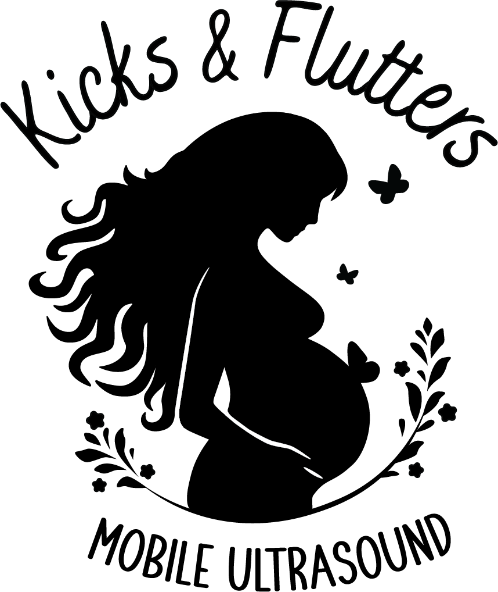

Anna Kippenberger
Kicks & Flutters | 2024
Kicks and Flutters is a mobile ultrasound buisiness based in Nashville, the logo was rebranded to include more feminine qualities and make the design easy to produce at smaller scales. This was done by keeping a simple silhouette and fixing negative space to clearly see the arm on the stomach.
